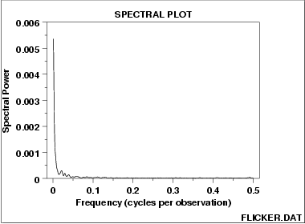

|
1.
Exploratory Data Analysis
1.3. EDA Techniques 1.3.3. Graphical Techniques: Alphabetic 1.3.3.27. Spectral Plot
|
|||
| Spectral Plot for Random Walk Data |  | ||
| Conclusions |
We can make the following conclusions from the above plot.
|
||
| Discussion | This spectral plot starts with a dominant peak near zero and rapidly decays to zero. This is the spectral plot signature of a process with strong positive autocorrelation. Such processes are highly non-random in that there is high association between an observation and a succeeding observation. In short, if you know Yi you can make a strong guess as to what Yi+1 will be. | ||
| Recommended Next Step |
The next step would be to determine the parameters for the
autoregressive model:
Such estimation can be done by linear regression or by fitting a Box-Jenkins autoregressive (AR) model. The residual standard deviation for this autoregressive model will be much smaller than the residual standard deviation for the default model
Then the system should be reexamined to find an explanation for the strong autocorrelation. Is it due to the
|
||